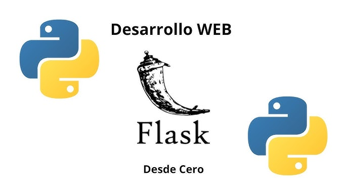
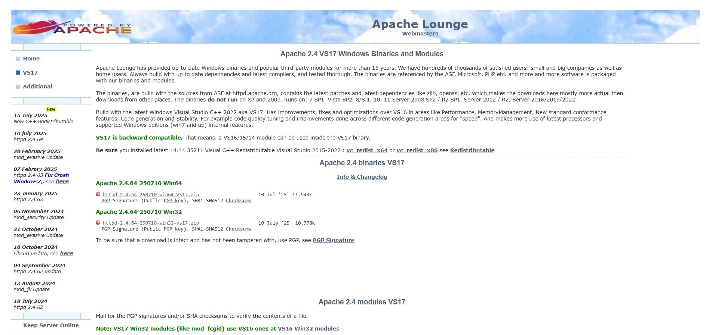
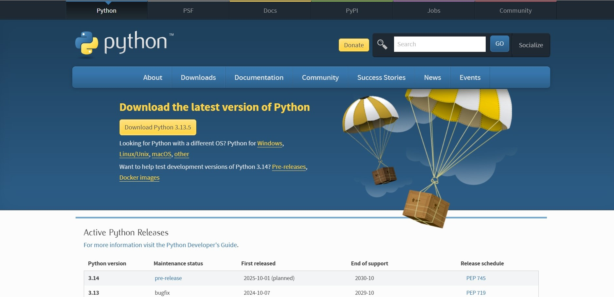
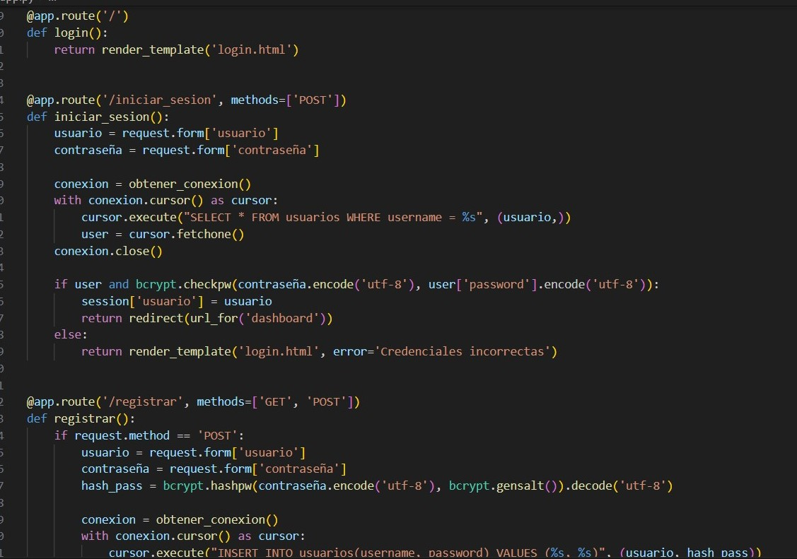
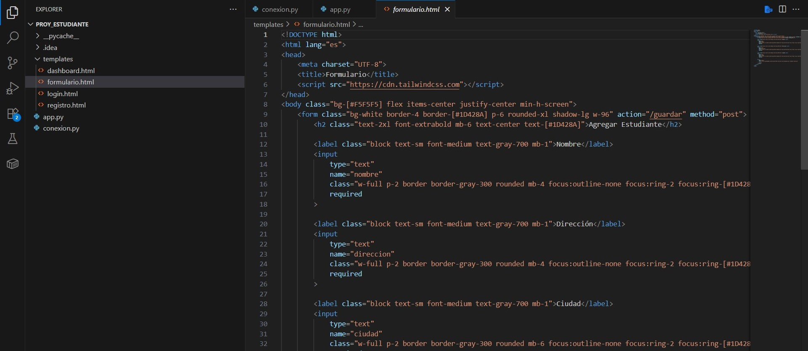

Objetivos de Aprendizaje
- Instalar y configurar Python y Apache con mod_wsgi
- Comprender los fundamentos de Python: variables, clases, funciones, estructuras
- Usar Flask para crear rutas, renderizar vistas y manejar formularios
- Implementar el patrón MVC en Flask con plantillas Jinja2
- Conectar Flask con bases de datos MySQL usando pymysql
- Crear aplicaciones web orientadas a objetos con Flask
- Estilizar HTML y validar datos desde formularios web
Tecnologías Utilizadas
- Lenguaje: Python 3.x
- Framework: Flask
- Servidor Web: Apache con mod_wsgi
- Plantillas: Jinja2
- Base de datos: MySQL
- Gestor de paquetes: pip
- Herramientas adicionales: Apache Lounge, Visual C++ Redistributable

¿Que se hizo?
1. Configuración del entorno y servidor Apache
- Configuración de httpd.conf (puerto 8080, ServerRoot)
- Integración de mod_wsgi para ejecutar aplicaciones Flask en Apache

2. Fundamentos de Python
- Tipado dinámico, estructuras básicas (listas, tuplas, diccionarios)
- Programación orientada a objetos con clases, herencia y __init__

3. Desarrollo con Flask
- Instalación de Flask y creación de rutas con @app.route.
- Manejo de formularios con request y renderizado con render_template.
- Conexión a MySQL con pymysql y procesamiento de datos desde HTML.

4. Plantillas y proyecto final
- Creación del archivo formulario.html para insertar estudiantes.
- Desarrollo completo: clases Persona y Estudiante, app funcional con BD integrada.

Ejercicios
Ejercicios Propuestos de Desarrollo API con Spring
- Los ejercicios planteados tienen como objetivo
integrar conocimientos fundamentales de Python y Flask mediante la construcción
progresiva de una aplicación web. Se comienza creando clases con herencia para
reforzar la programación orientada a objetos, luego se desarrolla una app Flask
que registra estudiantes mediante formularios. Posteriormente, se conecta la
aplicación a una base de datos MySQL usando pymysql, y se utilizan plantillas
HTML dinámicas con Jinja2. Finalmente, se enfoca en mejorar la interfaz y validar
los datos enviados desde el formulario.
Conclusión
La práctica demuestra cómo usar Flask como alternativa ligera a frameworks
más complejos, facilitando el desarrollo rápido de aplicaciones web con Python.
La conexión a MySQL y el uso de Jinja2 permite construir sistemas web funcionales
y bien estructurados. Flask ofrece simplicidad sin sacrificar potencia, ideal para
estudiantes y proyectos MVP.
Reflexión
La práctica demuestra cómo usar Flask como alternativa ligera a frameworks más complejos,
facilitando el desarrollo rápido de aplicaciones web con Python. La conexión a MySQL y el
uso de Jinja2 permite construir sistemas web funcionales y bien estructurados. Flask ofrece
simplicidad sin sacrificar potencia, ideal para estudiantes y proyectos MVP.
Recursos Utilizados